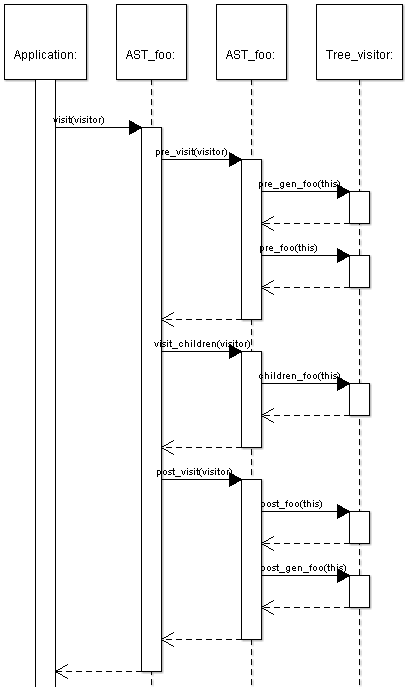
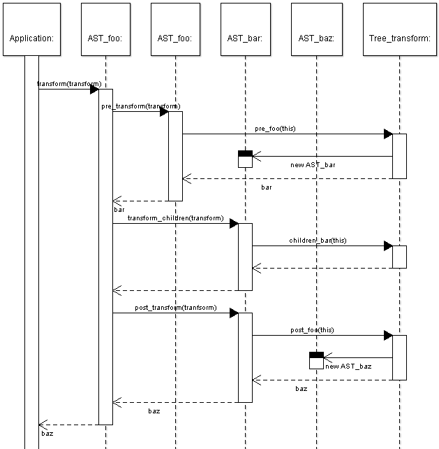

Overview of the AST classes and transformation API
This document explains the code for the AST classes, tree visitor
API and tree transformation API. All this code is generated by a tool
called maketea. It does not explain how this
code is derived from the phc grammar; some of
the details of this process are explained in the maketea theory.
The AST classes
There are two main kinds of AST classes: classes that correspond
to non-terminals in the grammar, and classes that correspond to
terminals in the grammar. These two kinds are called
AST_xxx and Token_xxx respectively. Examples
are AST_while, AST_expr,
Token_method_name and Token_int.
The main difference is that terminal classes have one additional
field (and sometimes two). Every token class gets an attribute called
value. The type of this attribute depends on the token;
for most tokens it is String* (this is the default);
however, if the grammar explicitely specifies a type for the value (in
angular brackets, for example REAL<double>), this
overrides the default. If the default value is overridden, the token
class gets an additional attribute source_rep, which
corresponds to the value of the token in the source value. The type of
source_rep is always String*. For example,
the real number 5E-1 might have value set to
the double 0.5, but source_rep set to
“5E-1”. Similarly, a string __FILE__
might have value set to
/home/joe/myscript.php, but source_rep set
to __FILE__. If the type of the value
attribute it set to be empty, the token class does not get a value but
(but it will get a source_rep field). This is the case
for Token_null<> in the phc grammar.
In addition, all the tokens classes have a method called
get_value_as_string() and a method
get_source_rep when applicable. This is useful for
programs that operate on general AST_identifier objects
(such as Token_method_name or
Token_class_name) or AST_literal (such as
Token_real or Token_int). Note that the
value returned by get_value_as_string() and
get_source_rep() may be different; for example,
get_source_rep() might return 0.5E-1, while
get_value_as_string() might return 0.5.
All (non-terminal and terminal) then provide the following methods
for deep equality, pattern matching, cloning, calling a tree visitor
and calling a tree transformer. These methods are explained separately
in sections below.
Deep Equality
Deep equality is implemented by bool deep_equals(Object*
other). It takes into account the entire tree structure
generated by maketea, including any fields
that are specified in the mixin code
in the grammar. Thus, deep_equals also compares line
numbers, comments, etc.
Cloning
Cloning is implemented by deep_clone. Cloning makes a
(deep) copy of a tree, so the set of all pointers in the new tree is
completely distinct from the set of pointers in the old tree. The only
exception to this rule is that cloning the WILDCARD
objects (see pattern matching, below) returns the
WILDCARD object itself.
Pattern Matching
Pattern matching is implemented by bool match(Object*
pattern). Pattern matching differs from deep equality in two
ways. First, it does not take into account any fields added by the
mixin code; for example, it does not compare line numbers or comments.
Second, match supports the use of wildcards. maketea generates a special class called
Wildcard. You should never instantiate this class
directly; in <phc/ast.h>, you will find the
following declaration:
extern Wildcard* WILDCARD;
This WILDCARD is the sole instance of
Wildcard. When match encounters a reference
to this object in a pattern, it does two things: it skips that field
in the comparison (so it acts as a “don't care”), and it
replaces the value of the field in the pattern by the value in the
tree. For example, in the body of the if in
Token_class_name* name = new Token_class_name(new String("SOME_CLASS"));
Token_class_name* pattern = new Token_class_name(WILDCARD);
if(name->match(pattern))
{
// ...
}
pattern->value will be set to the corresponding
value in name. Tutorials 3
and 4 include examples of the use of
wildcards.
Calling any methods on the WILDCARD object other than
deep_clone will lead to a runtime error.
The Tree Visitor API
|

|
Every AST class provides four methods to support the tree visitor
API: void visit(Tree_visitor*),
void pre_visit(Tree_visitor*),
void visit_children(Tree_visitor*) and
void post_visit(Tree_visitor*). The implementation of each of
these methods is very simple.
visit simply calls pre_visit, visit_children and post_visit in order. It could have been implemented once and for all in the AST_node class (but is not, for no particular reason).
For a node x0, which inherits from x1,
which inherits from x2, which in turn inherits from
x3, etc., x0::pre_visit calls
pre_x3, pre_x2, pre_x1 and
pre_x0, in that order, on the tree visitor object,
passing itself as an argument. If x0 inherits from
multiple classes, all of the appropriate visitor methods will be
invoked. However, if x0 inherits from both
x1a and x1b, the programmer should not rely
on the relative order of pre_x1a and
pre_x1b.
x0::visit_children simply calls children_x0.
x0::post_visit will call post_x0,
post_x1, etc. Again, if x0 inherits from
both x1a and x1b, the programmer should not
rely on the relative order of post_x1a and
post_x1b. The only guarantee made by maketea is that the order of the pre-methods will
be the exact reverse of the order of the post-methods.
|
The Tree Transform API

Every AST class AST_foo, which inherits from
AST_gen_foo provides four methods to support the tree
visitor API: AST_gen_foo* transform(Tree_transformer*),
AST_gen_foo* pre_transform(Tree_transformer*), void
transform_children(Tree_transformer*) and AST_gen_foo*
post_transform(Tree_transformer*). It is not entirely as
straightforward as this; if AST_foo inherits from more
than one class, the return type would probably be
AST_foo; in some cases, transform might
return a AST_foo_list instead. See the section on context resolution
in the grammar formalism for details; here we consider the
programmer's perspective only. The exact signatures for a particular
class can always be found in generated/ast.h.
As with the tree visitor API, transform calls
pre_transform, transform_children and
post_transform. However, while transform
calls pre_transform on itself, it calls
transform_children and post_transform on the
node returned by pre_transform. If
pre_transform returns a vector, transform
calls transform_children and post_transform
on every element in that vector, assembling all the results.
pre_transform and post_transform simply
call the appropriate method in the Tree_transform object.
However, if pre_transform (or
post_transform) returns a list of nodes, the
corresponding method in the tree transform object will expect two
arguments: the node to be transformed, and an empty list of nodes that
will be the return value of pre_transform. In that case,
pre_transform will first create a new empty list, pass
that in as the second argument to the corresponding method in the tree
transform object, and then return that list.
transform_children just calls the corresponding method
in the tree transform object.
|